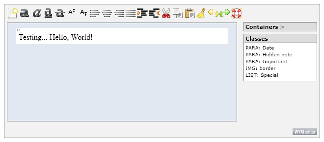
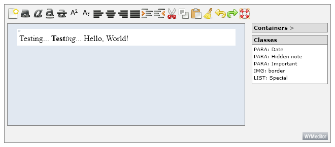
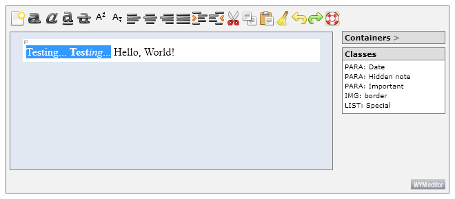
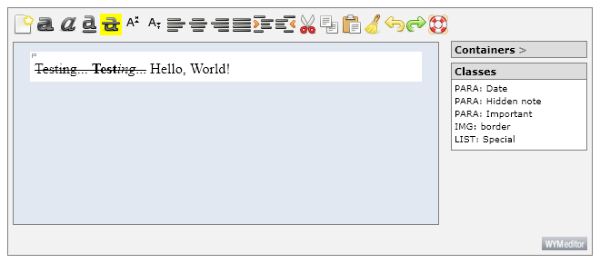
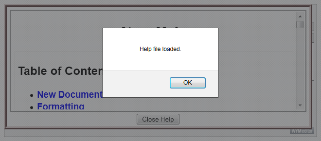
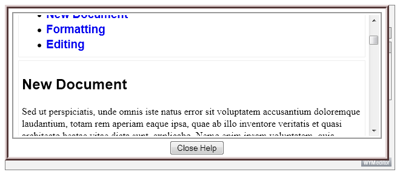

Extending the Basic Setup
Now that we have verified your installation of WYMeditor and the Desktop plugin is working, let's tweak the code to include some buttons which are unique to the Desktop plugin.
To modify the basic setup, we only need to change the inline JavaScript:
<!-- The JavaScript code which will initialize WYMeditor and the Desktop plugin. -->
<!-- This will run as soon as the document is ready (typically after the HTML document is fully loaded). -->
<!-- This code can safely be placed in an external JavaScript file. -->
<script language="JavaScript" type="text/javascript">
$(document).ready(function() {
$(".wymeditor").wymeditor({
html: '<p>Testing... Hello, World!<\/p>',
stylesheet: '/{Path_to_JS_Directory}/wymeditor/wymeditor/skins/styles.css',
skin: 'desktop',
postInit: function(wym) {
wym.desktop.setParent(wym);
wym.desktop.setDebug(true);
/* Get the various icons and icon lists we want to use. */
var docNewIcon = wym.desktop.generateToolList(['DocumentNew']);
var formatList = wym.desktop.generateToolList([':format']);
var editList = wym.desktop.generateToolList([':edit']);
var helpIcon = wym.desktop.generateToolList(['HelpBrowser']);
/* Initialize our array of requested icons. */
var requested = new Array();
requested.push(docNewIcon[0]);
/* Now place the format icons on the requested list in the order we want then to appear. */
var formatOrder = [ 'FormatTextBold', 'FormatTextItalic', 'FormatTextUnderline',
'FormatTextStrikethrough', 'FormatSuperscript', 'FormatSubscript',
'FormatJustifyLeft', 'FormatJustifyCenter', 'FormatJustifyRight',
'FormatJustifyFill', 'FormatIndentMore', 'FormatIndentLess' ];
for(var i = 0; i < formatList.length; i++) {
var pos = 0;
while((pos < formatList.length) && (formatList[pos].name != formatOrder[i])) {
pos++;
}
if((pos < formatList.length) && (formatList[pos].name == formatOrder[i])) {
requested.push(formatList[pos]);
}
}
/* Now place the edit icons on the requested list in the order we want then to appear. */
var editOrder = ['EditCut', 'EditCopy', 'EditPaste', 'EditClear', 'EditUndo', 'EditRedo'];
for(var i = 0; i < editList.length; i++) {
var pos = 0;
while((pos < editList.length) && (editList[pos].name != editOrder[i])) {
pos++;
}
if((pos < editList.length) && (editList[pos].name == editOrder[i])) {
requested.push(editList[pos]);
}
}
/* Finally add our last icon. */
requested.push(helpIcon[0]);
/* Initialize the Desktop plugin. */
wym.desktop.init(requested);
}
});
});
</script> |
Now load your HTML file in a web browser. You should now be viewing something like the following image:
 |
Lets add some functionality. For this example we will extend the StrikeThrough button (the button with a line through the middle of a lowercase A, the fifth button from the left in the above image) to place <strike> tags around whatever text is highlighted. We are also modifying the initial HTML so we can better test the new functionality. Obviously we want this new functionality to trigger when we click the StrikeThrough button, so our postInit function now becomes (please note the ' ⁝ ' character is used to indicate duplicate code from the previous code section):
⁝
html: '<p>Testing... <b>Test</b><i>ing</i>... Hello, World!<\/p>',
⁝
postInit: function(wym) {
wym.desktop.setParent(wym);
wym.desktop.setDebug(true);
/* Get the various icons and icon lists we want to use. */
var docNewIcon = wym.desktop.generateToolList(['DocumentNew']);
var formatList = wym.desktop.generateToolList([':format']);
var editList = wym.desktop.generateToolList([':edit']);
var helpIcon = wym.desktop.generateToolList(['HelpBrowser']);
/* Initialize our array of requested icons. */
var requested = new Array();
requested.push(docNewIcon[0]);
⁝
/* Finally add our last icon. */
requested.push(helpIcon[0]);
/* Find the FormatTextStrikethrough tool. */
var toolPos = 0;
while(requested[toolPos].name != 'FormatTextStrikethrough') {
toolPos++;
}
/* Our new FormatTextStrikethrough click handler. */
requested[toolPos].click = function(eventObj) {
/*
* In a dynamically loaded button (such as those found in the .../jquery.wymeditor.desktop.toolFunctions/
* directory), to get to the 'wym' object would require using 'this.selfObject.parent.parent'
*/
/* The actual selection. */
var sel = wym.selection();
/* Some anchor shortcuts. */
var anchor = sel.anchorNode;
var anchorValue = anchor.nodeValue;
var anchorParent = anchor.parentNode;
/* Some focus shortcuts. */
var focus = sel.focusNode;
var focusValue = focus.nodeValue;
var focusParent = focus.parentNode;
/* The beginning and ending location within the respective nodes. */
var begin = sel.anchorOffset;
var end = sel.focusOffset;
/* Is the selection within a single node? */
if(wym.desktop.domUtils.sameNode(anchor, focus)) {
/* Setup the before, strike, and after nodes. */
var beforeNode = document.createTextNode(anchorValue.substring(0, begin));
var strikeNode = document.createElement("strike");
strikeNode.innerHTML = anchorValue.substring(begin, end);
var afterNode = document.createTextNode(anchorValue.substring(end, anchorValue.length));
/* Place the nodes where they are supposed to be. */
/*
* Because the DOM (in its infinite wisdom) does not have an .insertAfter() method,
* _always_ start and the end of the modification sequence for a given node. For
* example, the original node is a text node containing "foo, bar, baz" inside a
* paragraph node (i.e., "<p>foo, bar, baz</p>") and we want to strike
* out the substring "bar,":
* 1) Replace the paragraph child with the text after the stricken text:
* <p> baz</p>
* 2) Insert the new strike node before the text node:
* <p><strike>bar,</strike> baz</p>
* 3) Insert the text which was before the stricken text:
* <p>foo, <strike>bar,</strike> baz</p>
*/
anchorParent.replaceChild(afterNode, anchor);
anchorParent.insertBefore(strikeNode, afterNode);
anchorParent.insertBefore(beforeNode, strikeNode);
}
/* Okay, so the selection must span multiple nodes. */
else {
/* Setup the anchor node replacements. */
var beforeNode = document.createTextNode(anchorValue.substring(0, begin));
var strikeNodeBegin = document.createElement("strike");
strikeNodeBegin.innerHTML = anchorValue.substring(begin, anchorValue.length);
/* Wrap the contents of all nodes between the anchor and focus nodes. */
var curNode = (anchor.nextSibling != null)
? anchor.nextSibling
: anchor.parentNode.nextSibling.firstChild;
while((curNode != null) && (!wym.desktop.domUtils.sameNode(curNode, focus))) {
curNode.innerHTML = "<strike>" + curNode.innerHTML + "</strike>";
curNode = (curNode.nextSibling != null)
? curNode.nextSibling
: curNode.parentNode.nextSibling.firstChild;
}
/* Setup the focus node replacements. */
var afterNode = document.createTextNode(focusValue.substring(end, focusValue.length));
var strikeNodeEnd = document.createElement("strike");
strikeNodeEnd.innerHTML = focusValue.substring(0, end);
/* Modify the anchor and focus nodes. */
anchorParent.replaceChild(strikeNodeBegin, anchor);
anchorParent.insertBefore(beforeNode, strikeNodeBegin);
focusParent.replaceChild(afterNode, focus);
focusParent.insertBefore(strikeNodeEnd, afterNode);
}
};
wym.desktop.init(requested);
}
⁝ |
You may notice we are using the .selection() method in the above example. Yet this method is not part of the core WYMeditor, but defined in the WYMeditor rangy interface plugin. The explanation is the Desktop plugin loads all of its dependencies within the .init() method. Thus, there is no need for additional <script> tags to load dependencies; the Desktop plugin tries very hard to be self-contained and easy to implement and use.
Now to test our code. On page load, nothing but the initial HTML seems different:
 |
Testing...phrases:
 |
 |
This was a triumph. I'm making a note here: HUGE SUCCESS.
Let's add some more functionality. For this example we will extend the HelpBrowser button (that would be the button on the right end of the button list, it looks like a ring buoy) to display a help dialog retrieved from a server. Again, we will use the click event handler; except it will be on the HelpBrowser button this time, so our postInit function now becomes:
⁝
postInit: function(wym) {
wym.desktop.setParent(wym);
wym.desktop.setDebug(true);
/* Get the various icons and icon lists we want to use. */
var docNewIcon = wym.desktop.generateToolList(['DocumentNew']);
var formatList = wym.desktop.generateToolList([':format']);
var editList = wym.desktop.generateToolList([':edit']);
var helpIcon = wym.desktop.generateToolList(['HelpBrowser']);
/* Initialize our array of requested icons. */
var requested = new Array();
requested.push(docNewIcon[0]);
⁝
/* Finally add our last icon. */
requested.push(helpIcon[0]);
/* Find the FormatTextStrikethrough tool. */
var toolPos = 0;
while(requested[toolPos].name != 'FormatTextStrikethrough') {
toolPos++;
}
/* Our new FormatTextStrikethrough click handler. */
requested[toolPos].click = function(eventObj) {
⁝
};
/* Find the HelpBrowser tool. */
toolPos = 0;
while(requested[toolPos].name != 'HelpBrowser') {
toolPos++;
}
/* Our new HelpBrowser click handler. */
requested[toolPos].click = function(eventObj) {
/*
* In a dynamically loaded button (such as those found in the .../jquery.wymeditor.desktop.toolFunctions/
* directory), to get to the 'wym' object would require using 'this.selfObject.parent.parent'
*/
/* Build the path to the HTML files. */
var baseDir = wym.computeBasePath() + "plugins/desktop/docs";
/* Build IFRAME element. */
var iframeSource = baseDir + '/iframe.html';
var iframeStyle = 'width: 600px; height: 200px; ' +
'margin: 3px; padding: 3px; ' +
'background-color: #FFFFFF; ' +
'border: 2px solid #999999';
var iframeOnLoad = '$( "#htmlHelpContent",' +
/* For reasons only known to jQuery, $("#id") does not work in the line below. :-( */
' document.getElementById("iframeHelpContent").contentDocument )' +
'.load( "' + baseDir + '/ExampleHelp.html",' +
' {help: 1},' +
' function() {' +
' alert("Help file loaded.");' +
' });';
var helpIframe = '<iframe id="iframeHelpContent" src="' + iframeSource +
'" style="' + iframeStyle +
'" onLoad=\'' + iframeOnLoad + '\'>' +
'Please use a browser which supports the IFRAME element.' +
'</iframe>';
/* Build close button. */
var helpButton = '<input type="button" id="buttonHelpClose" value="Close Help" />';
/* Now we can build the Help DIV element. */
var helpDivStyle = 'border: 6px ridge #996666; ' +
'background-color: #FFFFFF; ' +
'z-index: 10; position: fixed; ' +
'top: 5px; left: 5px; ' +
'margin: 3px; padding: 3px;';
var helpDiv = '<div id="divHelp" style="' + helpDivStyle + '">' +
'<center>' +
helpIframe + '<br />' + helpButton +
'</center>' +
'</div>';
/* Place the Help DIV element in the DOM. */
$(wym._box).after(helpDiv);
/* Set the close button click event handler. */
$("#buttonHelpClose").click(function() { $("#divHelp").remove(); });
};
wym.desktop.init(requested);
}
⁝ |
Testing time again! After loading the above code and clicking on the Help button, we are greeted with this:
 |
 |
And we're out of beta, we're releasing on time.
Now that we have walked through two different additions of functionality, you should be ready to add to and extend the Desktop plugin to fit your needs. A good starting point would be with the two click handlers above:
- Modify the HelpBrowser click handler to only ask for the page on the first click and to show/hide the div for all subsequent clicks (and remove that annoying alert
 , while still unobstusivly displaying success/failure of the help page load request).
, while still unobstusivly displaying success/failure of the help page load request). - Modify the FormatTextStrikethrough click handler to remove the <strike> tags if said tags are already present while still adding them if the tags are not present. You could even add the ability to toggle strike-through formatting on or off (like a desktop word processor).